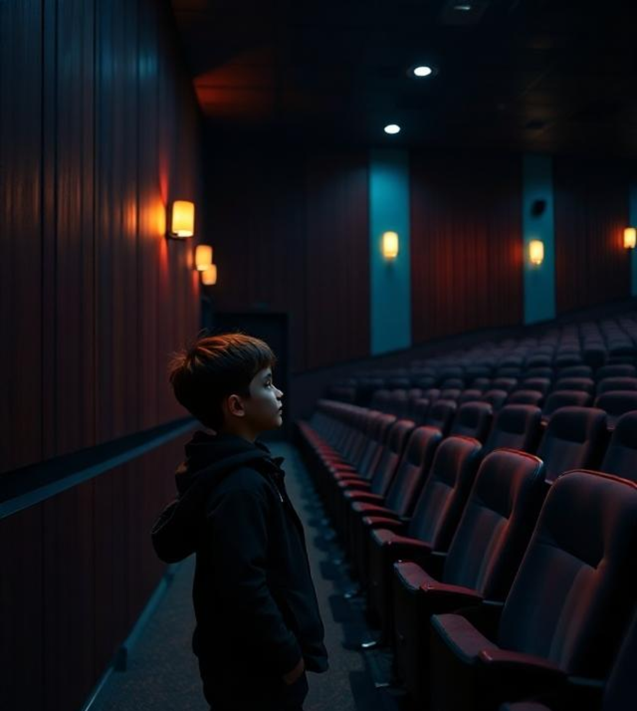

Figuren & Charakterisierung
Verbinde die Figuren mit ihren charakteristischen Eigenschaften.
Figuren:
Richard
Timo
Valerie
Jenny
Eigenschaften:
• "Grün", pflanzenartig, körperlich "anders"
• Hat eine sehr dominante und alte Oma Else (157 Jahre)
• Muss sich an strenge Regeln im Haus halten (Männer dürfen nicht alleine essen)
• Protestiert gegen die Oma, indem er Nougatkissen "binst"
• Möchte am Ende im Dorf bleiben und Petersilie pflanzen
• Seine Schwester Isabel verschwindet ebenfalls
• Hat eine sehr dominante und alte Oma Else (157 Jahre)
• Muss sich an strenge Regeln im Haus halten (Männer dürfen nicht alleine essen)
• Protestiert gegen die Oma, indem er Nougatkissen "binst"
• Möchte am Ende im Dorf bleiben und Petersilie pflanzen
• Seine Schwester Isabel verschwindet ebenfalls
• Tochter des Polizisten Manfred
• Schwester der verschwundenen Flora
• Kehrt nach Floras Verschwinden in die Schule zurück
• Will anfangs nicht über Flora reden, aber dann doch
• Möchte Flora finden und beginnt die Suche in Hannover
• Unsicher nach dem Sex mit Richard
• Lässt sich am Ende auf den letzten "Transport" ein
• Schwester der verschwundenen Flora
• Kehrt nach Floras Verschwinden in die Schule zurück
• Will anfangs nicht über Flora reden, aber dann doch
• Möchte Flora finden und beginnt die Suche in Hannover
• Unsicher nach dem Sex mit Richard
• Lässt sich am Ende auf den letzten "Transport" ein
• Verursacht Antriebslosigkeit bei anderen in seiner Nähe
• Hat Sex mit Jenny, ist aber unsicher über ihre Gefühle
• Verkauft Speed, um auf Partys "Energie" zu spenden
• Beendet Beziehung mit Jenny, um sie aus seinen Speed-Geschäften herauszuhalten
• Wirkt am Ende als "Schutzschild" für die 3D
• Hat Sex mit Jenny, ist aber unsicher über ihre Gefühle
• Verkauft Speed, um auf Partys "Energie" zu spenden
• Beendet Beziehung mit Jenny, um sie aus seinen Speed-Geschäften herauszuhalten
• Wirkt am Ende als "Schutzschild" für die 3D
• Leidet unter einer merkwürdigen Schlafkrankheit (Dauerschlaf)
• Ihre Mutter ist besorgt über ihren Zustand
• Sucht Hilfe bei einem Wahrsager und Martha
• Möchte in die "Anderwelt" entfliehen
• Verliert ihren Vater während eines Schlafanfalls
• Nimmt Speed, um auf der Beerdigung wach zu bleiben
• Fährt am Ende mit Martha in unbekannte Richtung davon
• Ihre Mutter ist besorgt über ihren Zustand
• Sucht Hilfe bei einem Wahrsager und Martha
• Möchte in die "Anderwelt" entfliehen
• Verliert ihren Vater während eines Schlafanfalls
• Nimmt Speed, um auf der Beerdigung wach zu bleiben
• Fährt am Ende mit Martha in unbekannte Richtung davon
Motive & Themen
Klicke auf ein Motiv, um mehr über seine Bedeutung zu erfahren.
Identitätskrise und Selbstfindung
Zugehörigkeit und Ausgrenzung
Gesellschaftlicher Druck und Anpassung
Magischer Realismus und Surrealität
Erwachsenwerden / Identitätssuche
Anderssein / Außenseitertum
Flucht und Eskapismus
Kriminalität und Unterwelt
Familie und dysfunktionale Strukturen
Verlust und Trauer
Realitätsflucht vs. Realität
Bewegung und Stillstand
Das Dorf als Mikrokosmos
Legenden und Mythen
Humor und Surrealität
Musik und Party
Verwandlung / Metamorphose
Identifikation mit dem "Dorf"
Klicke auf die Hotspots der interaktiven Dorfkarte, um Konflikte und Symbole zu entdecken.
Magischer Realismus - Junge
Wechsle zwischen Realität und Magie beim Jungen

Magischer Realismus - Strand
Wechsle zwischen Realität und Magie am Strand
Entscheidungsbaum-Spiel: Plot von "Draußen feiern die Leute"
Verfolge die Handlung des Romans, indem du bei jedem Schritt die richtige Entscheidung triffst. Nur eine Option führt zur tatsächlichen Handlung des Buches.
Wie beginnt der Roman "Draußen feiern die Leute" von Sven Pfizemaier?